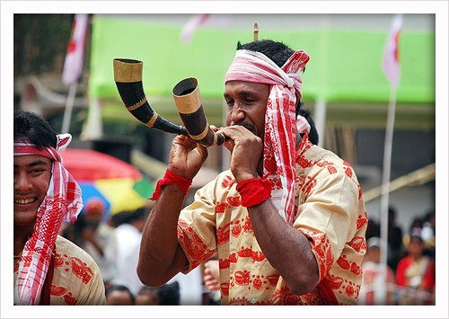

- Home
- Art & Crafts
- Culture
-

Assam
Assam is situated in the North-East of India and is the largest northeastern state in terms of population while second in terms of area. Assam covers an area of 78,438 km2 (30,285 sq miles). The state is bordered by Bhutan and the state of Arunachal Pradesh to the north; Nagaland, Arunachal Pradesh and Manipur to the east; Meghalaya, Tripura, Mizoram, and Bangladesh to the south; and West Bengal to the west. A significant geographical aspect of Assam is that it contains three of six physiographic divisions of India – The Northern Himalayas (Eastern Hills), The Northern Plains (Brahmaputra plain), and Deccan Plateau (Karbi Anglong).
Assam is the meeting ground of diverse cultures. The people of the enchanting state of Assam are an intermixture of various racial stocks such as Mongoloid, Indo-Burmese, Indo-Iranian and Aryan. The Assamese culture is a rich and exotic tapestry of all these races evolved through a long assimilative process. The natives of the state of Assam are known as "Asomiya" (Assamese), which is also the state language of Assam. The state has a large number of tribes, each unique in its tradition, culture, dress and exotic way of life.
Diverse tribes like Bodo, Kachari, Karbi, Miri, Mishimi, Rabha, etc co-exist in Assam; most tribes have their own languages though Assamese is the principal language of the state. A majority of the Assamese are Vaishnavas (a sect of Hinduism). The Vaishnavas do not believe in idol worshiping and perform "Naamkirtana", where the glory of Lord Vishnu is recited. The two important cultural and religious institutions that influence the cultural fabric of Assam: the "Satras", the site of religious and cultural practice which have been in existence for over 400 years and the "Naamghar", the house of prayers. Villagers generally associate on the basis of membership of a local Centre of devotional worship called "Naamghar". Villages are usually made up of families from a number of distinct castes.
In Assam, the caste system, although it exists, is not as prominent as in other parts of India. Other religions such as Buddhism, Christianity, Hinduism, Islam etc. are also practiced in Assam. The state festival of Assam is the Bihu which is celebrated in three parts during a year with great pomp and grandeur by all Assamese, irrespective of caste, creed or religion. There are various elements which are being used to represent beliefs, feelings, pride, identity, etc and are considered as important symbolic elements in Assamese culture. The quintessential symbols are the Asomiya"Gamucha", "Jaapi", "TamulPaan" and "Xorai". Traditional attire worn by women called the "Mekhela Chador" and Assamese jewellery also form an integral part of the Assamese culture. -
Art & Crafts
Introduction: Nestled in the northeastern region of India, Assam boasts a rich cultural heritage, reflected in its diverse art and craft traditions. From intricate handloom textiles to exquisite bamboo and brass artifacts, the state's artistic legacy is a testament to its vibrant cultural tapestry. Let's embark on a journey to explore the traditional crafts of Assam, each showcasing the skilled craftsmanship and rich cultural heritage of the region.
1. Assam Silk Weaving: Assam is renowned for its exquisite silk weaving, particularly the production of Muga, Eri, and Pat silk. Muga silk, known for its golden hue, is produced exclusively in Assam and holds a special place in the state's culture. Skilled weavers create intricate designs, motifs, and borders using traditional handloom techniques passed down through generations. The Assam silk saree, adorned with intricate patterns and motifs inspired by nature, is a symbol of elegance and tradition.
2. Assamese Jewelry: Assamese jewelry reflects the region's cultural diversity and craftsmanship, with each piece showcasing unique designs and motifs. Traditional Assamese jewelry is crafted from materials like gold, silver, and brass, adorned with gemstones, beads, and intricate filigree work. Ornate necklaces, earrings, bangles, and anklets feature traditional motifs inspired by nature, animals, and Assamese folklore. Assamese jewelry holds both aesthetic and cultural significance, often worn during weddings, festivals, and ceremonial occasions.
3. Assamese Pottery: Pottery-making is an age-old craft practiced in Assam, with artisans skillfully crafting clay into various forms of pottery, including pots, jars, utensils, and decorative items. The black pottery of Goalpara and red pottery of Majuli are notable examples of Assamese pottery traditions, each characterized by unique techniques and designs. Artisans use traditional hand-building and wheel-throwing methods to create pottery items, often decorated with intricate patterns and motifs inspired by Assamese culture and nature.
4. Bamboo and Cane Craft: Bamboo and cane craft are integral to Assamese culture, with artisans transforming locally sourced bamboo and cane into a wide range of utilitarian and decorative items. Basketry, furniture, mats, lampshades, and decorative pieces are crafted using traditional techniques such as weaving, splitting, and bending. Assamese bamboo and cane craft exemplify the region's sustainable practices and environmental consciousness, with artisans creating eco-friendly products rooted in tradition and craftsmanship.
5. Assamese Brass Craft: Brass craft is another traditional craft form in Assam, with artisans skillfully working with brass to create decorative items, utensils, and religious artifacts. Dhokra casting, a traditional brass casting technique, is widely practiced in Assam, producing intricately designed figurines, bells, and jewelry. Assamese brass craft is characterized by its fine detailing, intricate patterns, and symbolic motifs inspired by Assamese mythology, folklore, and nature.
6. Assamese Wood Carving: Wood carving is an ancient craft practiced in Assam, with artisans skillfully carving intricate designs and motifs on various wooden objects, including furniture, decorative panels, sculptures, and religious artifacts. The woodcarving tradition of Assam reflects the region's cultural diversity and craftsmanship, with artisans incorporating traditional motifs, patterns, and symbols into their creations. Assamese wood carving is characterized by its fine detailing, craftsmanship, and cultural significance, often used in temples, monasteries, and traditional Assamese households.
Conclusion: The traditional crafts of Assam are a reflection of the region's rich cultural heritage, skilled craftsmanship, and artistic ingenuity. From silk weaving to jewelry-making, pottery, bamboo and cane craft, brass craft, and wood carving, each craft form showcases the unique identity and cultural legacy of Assam. As custodians of these age-old traditions, Assamese artisans continue to preserve and promote their craft, ensuring that the artistic splendor of Assam remains vibrant and timeless for generations to come. -
Culture
Assam is the meeting ground of diverse cultures. The people of the enchanting state of Assam are an intermixture of various racial stocks such as Mongoloid, Indo-Burmese, Indo-Iranian and Aryan. The Assamese culture is a rich and exotic tapestry of all these races evolved through a long assimilative process. The natives of the state of Assam are known as "Asomiya" (Assamese), which is also the state language of Assam. The state has a large number of tribes, each unique in its tradition, culture, dress and exotic way of life. Diverse tribes like Bodo, Kachari, Karbi, Miri, Mishimi, Rabha, etc co-exist in Assam; most tribes have their own languages though Assamese is the principal language of the state. A majority of the Assamese are Vaishnavas (a sect of Hinduism). The Vaishnavas do not believe in idol worshiping and perform "Naamkirtana", where the glory of Lord Vishnu is recited. The two important cultural and religious institutions that influence the cultural fabric of Assam: the "Satras", the site of religious and cultural practice which have been in existence for over 400 years and the "Naamghar", the house of prayers. Villagers generally associate on the basis of membership of a local Centre of devotional worship called "Naamghar". Villages are usually made up of families from a number of distinct castes. In Assam, the caste system, although it exists, is not as prominent as in other parts of India. Other religions such as Buddhism, Christianity, Hinduism, Islam etc. are also practiced in Assam. The state festival of Assam is the Bihu which is celebrated in three parts during a year with great pomp and grandeur by all Assamese, irrespective of caste, creed or religion. There are various elements which are being used to represent beliefs, feelings, pride, identity, etc and are considered as important symbolic elements in Assamese culture. The quintessential symbols are the Asomiya"Gamucha", "Jaapi", "TamulPaan" and "Xorai". Traditional attire worn by women called the "Mekhela Chador" and Assamese jewellery also form an integral part of the Assamese culture.
Gamucha The "Gamucha" is one of the most easily recognizable cultural symbols of the Assamese people and is an integral part of almost all socio-religious ceremonies. It is considered as an honorary piece of cloth commonly used for felicitation in Assam.
Gamucha, an honorary piece of cloth commonly used for Felicitation in Assam The "Gamucha", a white rectangular piece of cotton hand woven cloth with primarily a red border on three sides and red woven motifs on the fourth (in addition to red, other colors are also used) is put to many uses. It is used as a towel, as a waistcloth or a loincloth; a Bihu dancer wraps it around the head in a knot, it is also hung around the neck at the prayer hall and thrown over the shoulder to signify social status or respect. "Gamucha"s", also known as "Bihuwaans", are offered during Bihu as a token of love. Significantly the "Gamucha" is used equally by all, irrespective of religious and ethnic backgrounds.
Tamul Paan "Tamul Paan" (the areca nut and betel leaves) or Guapan are considered as the offers of devotion, respect and friendship.
"Tamul Paan" served in a Bota, a traditional Bell metal Utensil "Tamul Paan" (the areca nut and betel leaves) or Guapan are considered as the offers of devotion, respect and friendship. Guests are offered "Tamul Paan" in a traditional bell metal serving "Bota" as a mark of honour. Chewing "Tamul Paan" gives a kind of high and feel good factor. "Tamul Paan" is integral part of all social and religious ceremonies of the Assamese people. It is an ancient tradition and is being followed since time-immemorial.
Jaapi The "Jaapi" is a traditional conical hat from Assam which is made from tightly woven bamboo and/or cane and "Tokoupaat", a type of large palm leaf. The word "Jaapi"derives from Jaap meaning a bundle Tokou leaves.
Jaapi, a traditional symbol of Assam "Jaapi" is worn in a style of Bihu dance, used as protection against the elements, offered as a sign of respect in ceremonies, and placed as a decorative item around the house, especially near the front door as a welcome sign. Plain "Jaapi" were used by farmers for protection from the sun and rain while working in the fields, while ornate "Jaapi" were worn as a status symbol by Assamese royalty and nobility.
Xorai
Traditional Bell Metal "Xorai" "Xorai" a traditional symbol of Assam, is a manufactured bell-metal product and is considered as an article of great respect by the people of Assam. There are "Xorai"s" with or without a cover on the top. Hajo and Sarthebari are the most important centers of traditional bell-metal and brass crafts in Assam. Xorai"s"are used to offer "Tamul Paan" as a sign of welcome and thanks for guests. It is also used as a utensil to offer Prasad, food and other items in front of the Lord in an altar or "Naamghar". "Xorai"s" are also used as decorative pieces and are also offered as a gift to a person of honour during felicitations. "
Mekhela Chador Assam is the home of several types of silks, the most prominent and prestigious being "Muga", the natural golden silk exclusive only to Assam. Apart from "Muga", there are other two varieties called "Paat", a creamy-bright-silver coloured silk and "Eri", a variety used for manufacturing warm clothes for winter... Assam is the home of several types of silks, the most prominent and prestigious being "Muga", the natural golden silk exclusive only to Assam. Apart from "Muga", there are other two varieties called "Paat", a creamy-bright-silver coloured silk and "Eri", a variety used for manufacturing warm clothes for winter. Apart from Sualkuchi, the centre for the traditional silk industry, in almost every part of the Brahmaputra Valley, rural households produce silk and silk garments with excellent woven designs. Moreover, various ethno-cultural groups in Assam make different types of cotton garments with unique woven designs and wonderful colour combinations. Traditional Mekhela Chadors are made from Cotton, Muga, Paat Silk or Eri Silk. However, now a day"s some modern low-budget Mekhela Chadors are also made with varying blends of Cotton and Muga or Paat Silk with synthetic materials.
Traditional Muga Silk Mekhela Chador Mekhela Chador is an indigenous traditional Assamese dress worn by women. There are two main pieces of cloth that are draped around the body. The bottom portion, draped from the waist downwards is called the Mekhela. It is in the form of a very wide cylinder that is folded into pleats to fit around the waist and tucked in. The Chador, a lengthy piece of cloth, has one end tucked into the upper portion of the Mekhela and the rest draped around the rest of the body and pinned to the blouse. The Mekhela Chador is invariably worn with a blouse underneath which covers the top half of the body and an underskirt with a string is often used. A Riha is still worn as part of the Assamese bridal trousseau and in other indigenous traditional events like Bihu etc.
Assamese Jewellery Assamese ornaments are one of the most important parts of Assamese culture. It is generally made of gold termed as "Kesha Xoon" or raw gold. The ornaments are very beautiful to look at and are a very prestigious part of Assamese culture. Some of the popular traditional Assamese jewellery include earrings with exquisite Lokaparo, Keru, Thuriya, Jangphai, Long Keru, Sona or Makori; an array of necklaces including Golpata, Satsori, Joon biri, Bena, Gejera, Dholbiri, Doogdoogi, Biri Moni, Mukuta Moni, Poalmoni, Silikha Moni and Magardana, and diversified rings including Senpata, Horinsakua, Jethinejia, bakharpata and others
Traditional Assamese Ornaments crafted at Ranthali, Nagaon, Assam The jewellery is typically hand-made, and the designs mostly depict flora and fauna treasures of the region. Traditional designs of Assamese jewellery are simple but decorated with vibrant red gemstone, ruby or mina. Black, red and green colors on gold jewellery look very gorgeous and these colors also dominate the traditional dresses of tribes and communities of the northeastern states.
Bihu Bihu is the most popular folk dance of Assam. Bihu dances are performed by young boys and girls during the Bihu festivities which represent youthful passion, reproductive urge and joy. It is characterized by brisk dance steps and rapid hand movement. Dancers wear traditional colourful Assamese clothing.
Bihu dancers playing the Lahori Gogona The dances are accompanied by musical instruments like "Dhol" (Dholak), pepa, gogana, banhi(flute) etc. Though the origin of the Bihu dance is unknown, the first official endorsement is cited to be when Ahom king Rudra Singha invited Bihu dancers to perform at the Ranghar fields sometime around 1694 on the occasion of Rongali Bihu. >
Satriya Nritya Satriya Nritya is the classic dance form of Assam which represents the Satriya culture, the basis of the religious and cultural fabric of Assam. It is one among eight principal classical Indian dance traditions. Whereas some of the other traditions have been revived in the recent past, Satriya has remained a living tradition since its creation by the founder of Vaishnavism in Assam, the great saint Srimanta Sankardeva, in 15th century Assam.
A group performing Satriya Nritya The core of Satriya Nritya has usually been mythological stories. This was an artistic way of presenting mythological teachings to the people in an accessible, immediate, and enjoyable manner.
Barpeta's Bhortal Nritya Bhortal Nritya, an extension of Sankari culture of Barpeta evolved from the classical dance form of that particular district of Assam and was developed by Narahari Burha Bhakat, a well-known Satriya artist. Six to ten dancers perform this dance and produce a good number of attractive formations displaying the cymbals. This dance can be performed in larger groups as well. It is performed to a very fast beat. This beat is known as "7hiya Nom". The dance can be seen during festive occasions in and around Barpeta and Guwahati.
A glimpse of the Bhor Tal Nritya
Jhumur Dance In the passage of more than a hundred years of their settlement in Assam the tea tribes have developed a synthesised form of dance called "Chah Baganar Jumur Nach". This is a beautiful dance to watch. A visitor to any tea garden can easily see this dance.
A troupe performing Jhumur Dance The tea tribes have a synthesized form of dance called "Jhumur Nach", performed by girls and boys together, or, sometimes by the girls alone, with precision of footwork while tightly clasping each other's waist.
Bagurumba The Bodo community has many folk dances to boast. Among them the best and the most attractive is the Bagurumba dance. This is mainly a formation dance with slow steps and outstretched hands. About a score of girls dressed in colourful attire perform this dance to the accompaniment of Bodo traditional musical instruments.
A group of girls performing the Bagurumba dance wearing traditional attires A tourist in Assam can see this dance in the Bodo inhabited areas of Kokrajhar, Bongaigaon, Nalbari, Darrang and Sonitpur districts. It is usually practiced during Baisagu, a festival of the Bodos in the Bishuba Sankranti or mid-April. The Bagurumba dance is also called "butterfly dance" because this attractive folk dance of the Bodo tribe of Assam resembles the movement of birds and butterflies.
Deodhani The Deodhani dance is associated with the worship of the snake goddess Manasa. A Deodhani girl, in an inspired state, goes on dancing to the accompaniment of Kham (drum) and Ciphung (flute) propitiating many a deity beginning with Shiva and ending with Lakshmi. There are actually two types of Deodhani Nritya. One is a semi-classical dance and the other one is a trance form (not a dance). The Deodhani Nritya found in Mangaldoi and southwest Kamrup area is linked to the Sukanani Oja-Pali. The Deodhani Nritya was observed at the Maa Kamakhya Temple as a Festival since the year 2007. It is believed that people taking part in this form of dance inherit some superficial power from Goddess Kamakhya.
Music in Assam Assam, being the home to many ethnic groups and different cultures, is rich in folk music. Traditional instruments include "Pepa", an instrument made from buffalo horn and "Bholuka baahor toka", a musical instrument made of split bamboo. The "Dhol" too is an important and a quintessential instrument used in Bihu dance.
A Bihu dancer playing the Dhol The "Dhol" is a double-sided barrel drum covered with goat, cow or buffalo skin and is played with a stick on one side and a handon the other. "Dhol" like instruments are found in almost every culture of the world, however, the Assamese "Dhol"or "PatiDhol" is distinguished by its small size and relatively produces a loud sound. These are extensively used in Bihu Geets, dances, and have also become a part of modern-day music. 
A Bihu dancer playing the traditional "Pepa" The "Gogona" is a type of jaw harp, a vibrating reed instrument that is used primarily in the traditional Bihu music in Assam by the women folk. It is made of a piece of bamboo/horn that has a bifurcation on one end. Some of the popular yester year artists like Jyoti Prasad Agarwala, Bishnuprasad Rabha, Parvati Prasad Baruva, Bhupen Hazarika, Nirmalendu Choudhury &Utpalendu Choudhury, Pratima Barua Pandey, LuitKonwar Rudra Baruah, Parvati Prasad Baruva, Jayanta Hazarika, Khagen Mahanta and Beauty Sarma Baruah has laid the foundation of the Assamese music industry with a confluence of indigenous folk music. Among the new generation, singers like Zubeen Garg, Angaraag Mahanta, Kalpana Patowary, Joi Barua, JitulSonowal and Manoj Borah are well known.
Cuisine of Assam Tea or "Saah" in Assamese is an indispensable part of Assamese cuisine. It is served in form of Black tea, Milk tea, Spiced tea, Green Tea, Lemon tea etc.
Different types of Traditional Pitha and Laru's The traditional Assamese Breakfast comprises of "Jolpaan" and "Pithas". Some types of "Jolpaan" are Bora Saul (a variety of sticky rice), Komal Saul, Xandoh, Chira, Muri, Akhoi, Sunga Saul etc. eaten in combination with hot milk, curd, jaggery, yogurt or seasonal ripe fruits. Pitha's and Laru's or Ladoo's are prepared especially during the time of Bihu from rice flour, grated coconut, sugar, jaggery etc. Some Pitha's are Til Pitha, Ghila Pitha, Xutuli Pitha, Sunga Pitha, Bhapotdiya Pitha, Lakhimi Pitha, Tora Pitha, Tekeli Pitha, Deksi Pitha, Muthiya Pitha, Kholasapori Pitha, etc. Laru's include sweet balls made from coconut called the "Laskara" or the "Tilor Laru" made from roasted sesame Seeds. The Assamese Thali comprises of plain steamed rice, a lentil preparation or "Daal", a mixed vegetable often called a "Labra", a variety of "pitika's" or mashed potatoes, brinjal, tomatoes etc, a dry vegetable preparation made with small potatoes or "Soru Aloo", Gourd, Bitter Gourd, Banana flower, a leafy vegetable preparation made with Lai Xaak, Fiddle Head Ferns or Dhekiya Xaak, Kosu Xaak or Colocassia leaves etc. Accompaniments include fermented bamboo shoot pickle or Khorisa, Kahudi/ Pantitenga and Kharoli which is fermented mustard paste, Butor Guri or Whole Black Chana Powder, Tilor Sesame Chutney, Lentil Chutney etc. The cuisine is characterized by very little use of spices, little cooking over fire and strong flavors mainly due to the use of locally available exotic fruits and vegetables that are either fresh, dried or fermented. Fish is widely used in the forms of Curry, Fry, Mash and Maas Pura cooked over fire. Meat includes Mutton, Chicken, Duck, Pigeon and Pork amongst a few communities.
A Quintessential Assamese Thali or Platter A traditional Assamese meal begins with a "khar", a class of dishes named after the main ingredient, and ends with a "tenga", a sour dish. The food is usually served in bell metal utensils which are believed to be good for health and boosting up immunity. The most common dessert would be a rice pudding called "Payash". "Poitabhat" is a favourite dish in Assam during the summer season. Cooked rice is soaked overnight and left to ferment. It is served with mustard oil, onion, chili, pickles, pitika etc. An Assamese meal is generally concluded with the chewing of "Tamul Paan" which is basically pieces of Betel nut eaten in combination with Betel leaf, edible limestone and tobacco. -
Feasts and Festivals